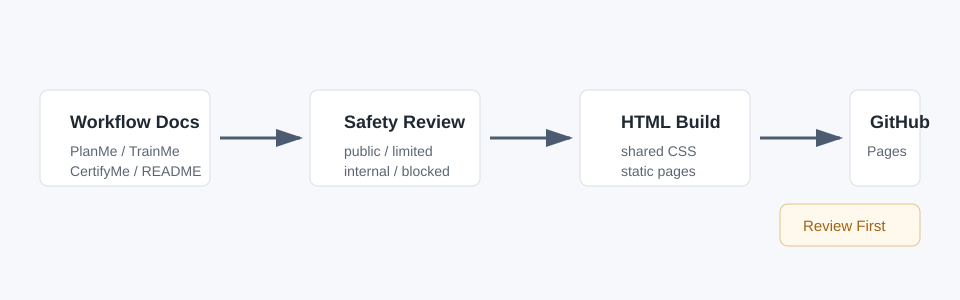

FRAME Evidence Workbench
This site packages selected FRAME documentation into a small review-first web experience.
The working model is practical:
- plan the workflow in Markdown
- train from the same artifacts used to do the work
- map real evidence to certification goals
- publish only scrubbed examples

Current Sections
- SQL and Power BI reporting
- Agile/Jira delivery and certification evidence
- CRM automation planning
- safety and publication review
- WB HTML PlanMe, TrainMe, CertifyMe, and style guide
Publishing Posture
This is a limited-review site until every page passes the safety checklist. Do not publish private tenant URLs, workbook data, screenshots with account details, tokens, or unearned certification claims.